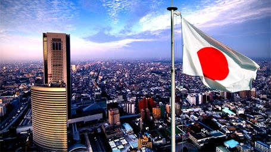

日本に来た理由
私は、早く自立しようと来日から1ヶ月後にはアルバイトを始める決意をしました。 街中に置いてあるアルバイト情報誌を手にとっては、電話で「働かせてください」と電話をかけ続けましたね。 でも、言葉が満足に話せないことから、なかなかいい返事はもらえず。 ウズベク人の先輩から紹介してもらえるチャンスもあったんですけど、そこは中国人が多い職場。 日本人だけの環境のほうが早く言葉を覚えられますし、日本の社会にも馴染むことができるので、 日本人が働いている職場を自分でひたすら探しました。
日本の好きなところ
店員さんの笑顔が好き。 店員さんはみんな元気よく「いらっしゃいませ」って言うし、何も買わないで店を出ても、「ありがとうございました」って言うのよね。 人、歴史、食べ物が好きだよ。 想像してみて。京都の古い神社で能の舞台を見た後、バーベキューに招かれて、お坊さんとしゃべりながらお酒を堪能する。 日本大好きだよ！
日本の嫌いなところ
日本の警察がきらいだよ。 誰かの携帯電話を拾って交番に届けたんだけど、３０分間、僕の住所と出身、それになんと職業まで詰問されたんだ！ あの馬鹿野郎どもは携帯の持ち主を助けることなんかよりも、僕を詰問することに興味があったようだね。 今は何かを拾ったら交番じゃなくてコンビニに届けるようにしてるよ。